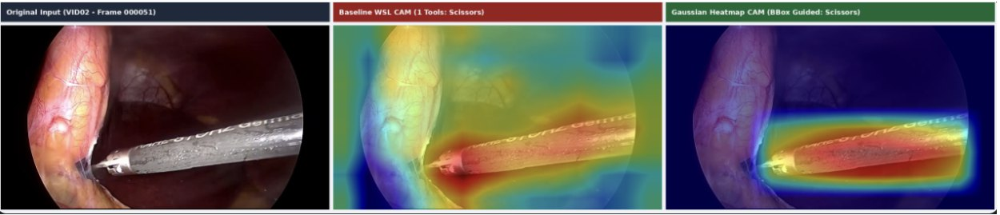

Surgical action triplet recognition: what box-derived spatial priors gain and lose
Triplet recognition asks a model to name the instrument, the action and the target tissue in every frame of a laparoscopic video. Rendezvous-in-Time (RiT) localises instruments with weakly supervised class activation maps (CAMs). I asked what happens if those CAMs are replaced with Gaussian heatmaps built from instrument bounding boxes, together with a linear tool head.
- Reproduced RiT from the official code on CholecT45 with the official 5-fold protocol and ivtmetrics. Triplet AP 28.2 ± 2.0, against 29.7 ± 2.6 reported, within one standard deviation.
- Ran the WSL-free variant under identical settings on all 45 surgeries.
| AP (%) · 5-fold mean ± std | RiT (paper) | RiT (my reproduction) | Box-derived prior | Δ vs reproduction |
|---|---|---|---|---|
| Tool | 88.6 ± 2.6 | 85.4 ± 2.7 | 85.5 ± 4.3 | +0.1 |
| Verb | 64.0 ± 2.5 | 60.8 ± 1.9 | 55.3 ± 1.3 | −5.5 |
| Target | 43.4 ± 1.4 | 40.8 ± 1.3 | 31.5 ± 1.9 | −9.3 |
| Triplet | 29.7 ± 2.6 | 28.2 ± 2.0 | 20.9 ± 1.7 | −7.3 |
Official CAMMA evaluation protocol (ivtmetrics), CholecT45 cross-validation splits.

Finding. I expected the cleaner localisation to help. It didn't: tool recognition stayed level, but target and triplet AP fell by 7–9 points. The diffuse CAMs spill onto the tissue around each instrument, and the target head appears to rely on that context. Tight instrument priors remove it. I am now testing a dual-scale prior: tight around the instrument, wider around the likely target region.
Full benchmark report available on request.